第 10 章
ADC转换单元
模拟信号无处不在。在数字世界里，模拟信号只能转换为数字信号来处理，ADC(AnalogtoDigitalConverter)模/数转换器就是模数之间的关键桥梁。F28335的CAP与EQEP处理开关类信号、脉冲类信号，但如电压、电流、温度、压力、湿度、速度、加速度等幅值随着时间连续变化的模拟信号的处理，就必需用到ADC。
10.1A/D转换基本原理
1.ADC转换步骤
A/D转换器（ADC)将模拟量转换为数字量通常要经过4个步骤：采样、保持、量化和编码。所谓采样，就是将一个时间上连续变化的模拟量转化为时间上离散变化的模拟量。如图10.1所。
将采样结果存储起来，直到下次采样，这个过程称做保持。一般，采样器和保持电路起总称为采样保持电路。将采样电平归化为与之接近的离散数字电平，这个过程称做量化。将量化后的结果按照定数制形式表就是编码。将采样电平（模拟值)转换为数字值时，主要有两类方法：直接比较型与间接比较型。
直接比较型：就是将输模拟信号直接与标准的参考电压比较，从得到数字量。属于这种类型常见的有并ADC和逐次较型ADC。
间接比较型：输模拟量不是直接与参考电压较，而是将二者变为中间的某种物理量再进比较，然后将比较所得的结果进数字编码。属于这种类型常见的有双积分型的ADC。
2.ADC转换原理
采用逐次逼近法的A/D转换器是由一个比较器、D/A转换器、缓冲寄存器及控制逻辑电路组成，如图10.2所示。
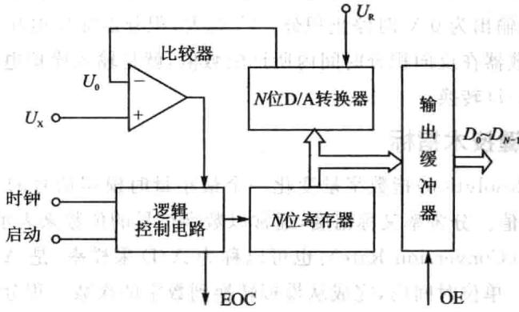
图10.2逐次逼近式A/D转换器原理图
基本原理是从高位到低位逐位试探比较，就像用天平称物体，从重到轻逐级增减砝码进行试探。逐次逼近法的转换过程是：初始化时将逐次逼近寄存器各位清零；转换开始时，先将逐次逼近寄存器最高位置1，送入D/A转换器，经D/A转换后生成的模拟量送人比较器，称为 ，与送入比较器的待转换的模拟量V进行比较，若 ，该位1被保留，否则被清除。然后再置逐次逼近寄存器次高位为1，将寄存器中新的数字量送D/A转换器，输出的 再与 比较，若 ，该位1被保留，否则被清除。重复此过程，直至逼近寄存器最低位。转换结束后，将逐次逼近寄存器中的数字量送入缓冲寄存器，得到数字量的输出。逐次逼近的操作过程是在一个控制电路的控制下进行的。
采用双积分法的A/D转换器由电子开关、积分器、比较器和控制逻辑等部件组成。如图10.3所示。
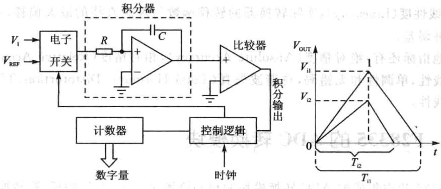
图10.3双积分式A/D转换器原理图
基本原理是将输电压变换成与其平均值成正比的时间间隔，再把此时间间隔转换成数字量，属于间接转换。双积分法A/D转换的过程是：先将开关接通待转换的模拟量 采样输入到积分器，积分器从零开始进行固定时间T的正向积分，时间T到后，开关再接通与 极性相反的基准电压 ,将 输到积分器，进行反向积分，直到输出为0V时停止积分 越大，积分器输出电压越大，反向积分时间也越长。计数器在反向积分时间内所计的数值，就是输模拟电压 所对应的数字量，实现了A/D转换。
3.ADC关键技术指标
①分辨率(Resolution)指数字量变化一个最小量时模拟信号的变化量，定义为满刻度与 的比值。分辨率又称精度，通常以数字信号的位数来表示。
②转换速率（ConversionRate)：也可以称为A/D采样率，是A/D转换一次所需要时间的倒数。单位时间内，完成从模拟转换到数字的次数。积分型A/D的转换时间是毫秒级属低速A/D，逐次比较型A/D是微秒级属中速A/D，全并/串并型A/D可达到纳秒级。采样时间则是另外个概念，是指两次转换的间隔。为了保证转换正确完成，采样速率（SampleRate)必须小于或等于转换速率。因此有人习惯上将转换速率在数值上等同于采样速率也是可以接受的。常用单位是ksps和Msps,表示每秒采样千/百万次(kilo/Million Samples per Second）。
③量化误差（QuantizingError）：由于A/D的有限分辨率而引起的误差，即有限分辨率A/D的阶梯状转移特性曲线与无限分辨率A/D(理想A/D)的转移特性曲线(直线）之间的最大偏差。通常是1个或半个最小数字量的模拟变化量，表示为1LSB、1/2LSB。
④偏移误差(Offset Eror）：输入信号为零时输出信号不为零的值，可外接电位器调至最小。
⑤满刻度误差（Full Scale Error)：满刻度输出时对应的输入信号与理想输入信号值之差。
⑥线性度(Linearity)：实际转换器的转移函数与理想直线的最偏移，不包括以上3种误差。
其他指标还有：绝对精度（AbsoluteAccuracy），相对精度（Relative Accuracy），微分非线性，单调性和无错码，总谐波失真（Total HarmonicDistotortion，THD）和积分线性。
10.2 F28335的ADC转换模块
F28335内集成的ADC转换模块的核资源是个12位的模/数转换器，12位的精度处于一般平，能够适合大多数测量需要，若需要用到更高精度的A/D，如
16位的或者24位的，就需要考虑外扩。A/D转换模块的价格相对比较高，重要的资源就要充分利用，在电子电路中通常采用的方法就是分时多路复用。同样，在F28335内核中，通过多路复用后有16个模拟转换输入通道，多路复用实际是用时间换资源，16个通道肯定是不能并行转换的，而在A/D模块转换时，实际采用2个采样保持器，2个采样保持器的结果肯定也不能同时转换，都是分时转换，2个采样保持器复用1个A/D转换模块，16个输入通道复用2个采样保持器，尽管只有1个A/D模块，但2个采样保持器保证了F28335的ADC转换模块也能够同时采样2个输通道，同时采样，但并不同步转换，但从最终结果来看就等效为同步转换，对于电力系统中通常需要三相电压实时同步采集，F28335内置A/D就不够用了，不得已只能外扩。这16个输入通道，2路采样保持器，如何组合，先后转换顺序如何确定，如何响应触发源？这就由2个8通道排序器(SEQ1、SEQ2)完成。这两个排序器可以独使用，这样就可以两组8通道分别排序，可以同时响应两路触发源。这两个排序器也可以级联使，这样就是1组16通道分别排序，只能响应1路触发源。A/D什么时候开始转换，什么时候结束转换，分别由ADC的触发源以及中断响应程序来控制。A/D的最终转换结果保存在结果寄存器内。在ADC模块中排序器就好像是整个ADC模块的控制器一样。F28335的ADC转换模块的原理框图如图10.4所示。
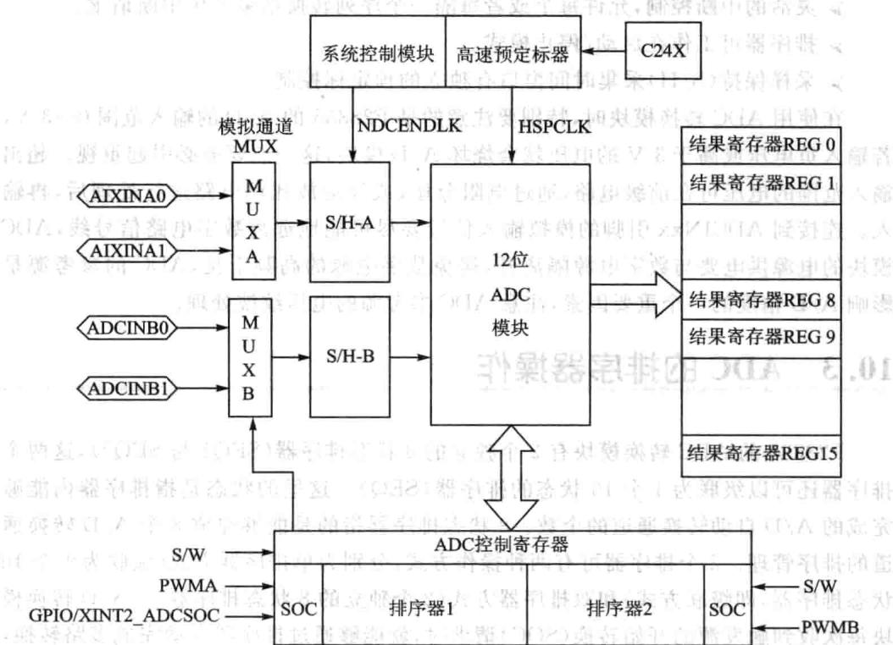
图10.428335的ADC模块功能框图
F28335的ADC模块主要包括以下特点：
➢12位模数转换。
2个采样保持器(S/H)。
》同时或顺序采样。
模拟电压输入范围0~3V。
ADC转换时钟频率最高可配置为25MHz，采样带宽12.5MHz。
》16通道模拟输人。
排序器持16通道独循环“自动转换”，每次转换通道可以软件编程选择。
16个结果寄存器存放ADC转换的结果，转换后的数字量表示为：
数字值 ,输模拟值在0～3之间
多个触发源启动ADC转换（SOC）：
S/W软件立即启动；
外部引脚；
启动；
启动。
➢灵活的中断控制，允许每个或者每隔个序列转换结束产中断请求。
》排序器可工作在启动/停止模式。
➢采样保持(S/H)采集时间窗口有独的预定标控制。
在使用ADC转换模块时，特别要注意的是F28335的A/D的输人范围0～3V，若输负电压或高于3V的电压就会烧坏A/D模块，这一点要务必引起重视。超出输入范围的电压可在前级电路，通过电阻分压，或经运放比例电路进行处理后，再输。连接到ADCINxx引脚的模拟输信号要尽可能地远离数字电路信号线，ADC模块的电源供电要与数字电源隔离开，避免数字电源的高频干扰，ADC的参考源是影响A/D精度的一个重要因素，注意ADC参考源的电压纹波处理。
10.3 ADC的排序器操作
F28335的ADC转换模块有2个独立的8状态排序器（SEQ1与SEQ2），这两个排序器还可以级联为1个16状态的排序器(SEQ）。这的状态是指排序器内能够完成的A/D动转换通道的个数。8状态排序器指的是能够完成8个A/D转换通道的排序管理。2个排序器可有两种操作式，分别为单排序器式（级联为1个16状态排序器，即级联式)和双排序器方式(2个独的8状态排序器）。A/D转换模块每次收到触发源的开始转换(SOC)请求时，就能够通过排序器自动完成多路转换，将模拟输信号引采样保持器与ADC内核。转换完成后，将转换结果存结果寄存器。两种操作式的最差别就在于，单排序操作式(即级联式)响应触发源是唯一的，可双排序的方式可以分别响应各自的触发源。单排序操作方式简单，双排序操作式复杂。两种作式都可以进顺序采样或者同步采样，两种采样式最的不同在于，顺序采样相当于是串模式，同步采样相当于并模式，能保证信号的同时性，显然同步采样的要求高些，两个采样保持器，决定了最多能够进2路同步，这在电气常用控制中，跟PWM控制结合起来，很有用，但超过2路同步，就无能为力，在三相电压、电流同时采样中，这个就不够了，就需要外扩了。采样的时候，可以多次采样，然后求平均，以获得比单采样方式更精确的结果。
1．级联操作方式
图10.5为排序器级联状态下的结构框图。
启动ADC之前，首先要进行一些初始化的工作。初始化转换的最多通道数(MAX_CONV），这个参数限制了最多有效通道数，对于级联模式，最大为16，在双排序方式下，最大为8，假如输入信号为6，设置值为4，实际只有4个输入有效通道。配置需要的转换输信号对应的转换次序（CHSELxx），最终的转换结果存放到各的结果寄存器（RESULTO~RESULT15），结果寄存器不与输通道完全对应，结果寄存器与转换次序对应。
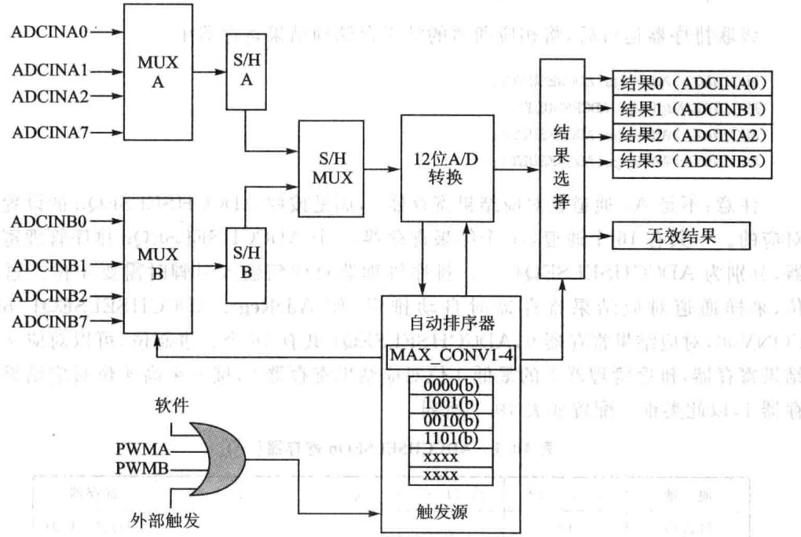
图10.5 排序器级联状态下的结构框图
（1）级联排序器顺序采样模式
在级联排序器操作式下，2个8状态排序器(SEQ1和SEQ2)构成个16状态的排序器SEQ控制外部输的模拟信号的排序，通过控制寄存器CONVxx的4位值确定输引脚，其中最高位确定采用哪个采样保持缓冲器，其他3位定义具体输引脚。两个采样保持器对应各的8选1多路选择器和8个输通道。下边举例说明A/D的配置：
[例10.1 级联模式下，ADCINA0,ADCINB1，ADCINA2和ADCINB5输入通道轮回顺序采样。
ADCINA0的控制数为0000，ADCINB1控制数为1001，ADCINA2的控制数为0010，·ADCINB5控制数为1101，最高位确定了是哪个采样保持器，后3位是具体的输引脚。
级联排序器运后，将相应通道的结果存储到结果寄存器中。
注意：不是AO通道就对应结果寄存器O，而是按照ADCCHSELSEQn的设置来对应的。一共有16个通道，16个结果寄存器，4个ADCCHSELSEQn排序管理寄存器，分别为ADCCHSELSEQ1～4。排序管理器对应到输引脚时需要4位二进制位，采样通道对应结果寄存器时自动排序，如AdcRegs.ADCCHSELSEQ1.bit.CONV00，对应结果寄存器0，ADCCHSELSEQ1共有16个二进制位，可以对应4个结果寄存器，排序管理器1的最低4位对应结果寄存器0，接下来高4位对应结果寄存器1，以此类推。配置如表10.1所列。
| 地址 | 位15~12 | 位11~8 | 位7~4 | 位3~0 | 寄存器 |
|---|---|---|---|---|---|
| 70A3h | 13 | 2 | 9 | 0 | CHSELSEQ1 |
| 70A4h | X | 醉者X虹 | X限 | X | CHSELSEQ2 |
| 70A5h | X | X | X左 | 中 x迎器 | CHSELSEQ3 |
| 70A6h | X | x4 | X | X | CHSELSEQ4 |
表10.1ADCCHSELSEQn寄存器(一)
[例10.2] 级联模式下轮回转换16个通道的操作。表10.2为ADCCH-SELSEQn寄存器（二）。配置以及结果存放位置如图10.6所示。
如图10.7所示为16个通道顺序采样工作方式。
| 地址 | 位15~12 | 位11~8 | 位7~4 | 位3~0 | 寄存器 |
|---|---|---|---|---|---|
| 70A3h | 3 | 2 | 0 | CHSELSEQ1 | |
| 70A4h | 7 | 6 | 5 | 4 | CHSELSEQ2 |
| 70A5h | 11 | 10 | 9 | 8 | CHSELSEQ3 |
| 70A6h | 15 | 14 | 13 | 12 | CHSELSEQ4 |
表10.2ADCCHSELSEQn寄存器（二）
(2)级联排序器同步采样模式
如果个输来自ADCINA0～7，另个输来ADCINB0～7，ADC能够实现2个ADCINxx输的同时采样。此外，要求2个输必须有同样的采样和保持偏移量（例如ADCINA4和ADCINB4，不能是ADCINA7和ADCINA6）。为了让ADC模块作在同步采样模式，必须设置ADCTRL3寄存器中的SMODE_SEL位为1。
在同步采样模式下，CONVxx寄存器的最高位不起作用，每个采样和保持缓冲器对CONVxx寄存器低3位确定的引脚进行采样。例如，如果CONVxx寄存器的值是0110b，ADCINA6就由采样保持器A采样，ADCINB6有采样保持器B采样；和
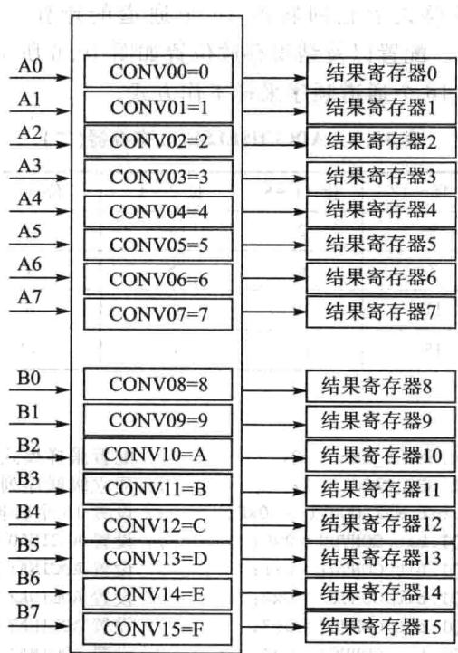
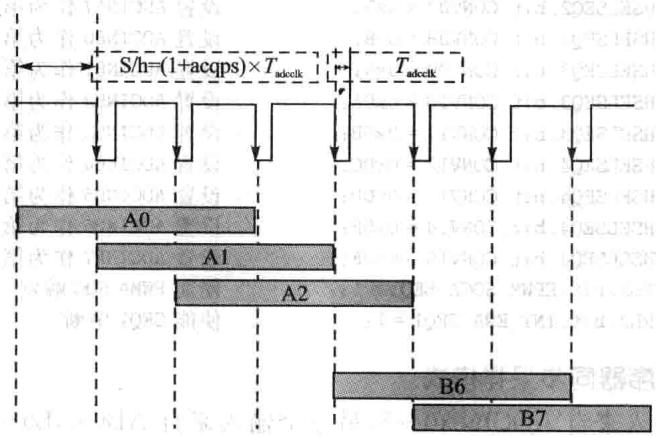
图10.616通道对应结果寄存器图10.716个通道顺序采样工作方式
1110b的效果是一样的，如果CONVxx寄存器的值是1001b，ADCINA1由采样和保持器A采样，ADCINB1由采样和保持器B采样。采样保持两路可以同步进，因为有两个采样保持器，但是转换不可能同时进。转换器先转换采样保持器A中锁存的电压量，然后转换采样保持器B中锁存的电压量。采样保持器A转换的结果保存到当前的ADCRESULTn寄存器（如果排序器已经复位，SEQ1的结果放到AD-
CRESULTO）;采样保持器B转换的结果保存到下一个（顺延）ADCRESULTn寄存器（如果排序器已经复位，SEQ1的结果放到ADCRESULT1），结果寄存器指针每次增加2。图10.8描述了同步采样模式的时序。
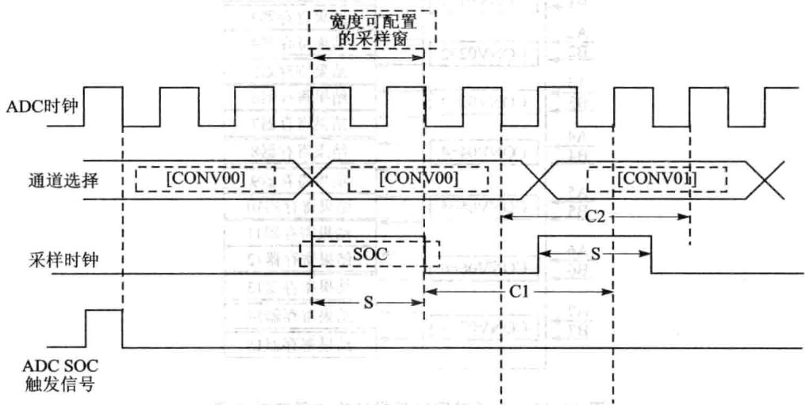
图10.8同步采样模式(SMODE=1)
[例10.3]级联排序器操作方式下，双通道同时采样，8对(16个通道)模拟量均由SEQ1排序控制，操作时序如图10.9所示，配置及转换结果存放位置如图10.10所示。
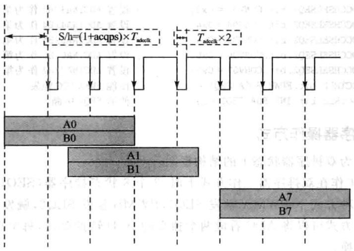
图10.9双通道同时采样级联排序器操作时序
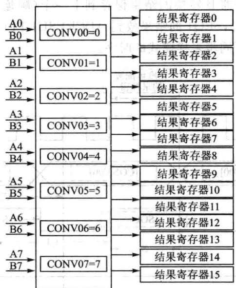
2.双排序器操作式
图10.11为双排序器状态下的结构框图。
当ADC工作在双排序器工作方式下时，2个8状态排序器（SEQ1和SEQ2）彼此独立。在这种方式下PWMA触发SEQ1，PWMB触发SEQ2，触发源是独立的。双排序器工作方式可以将ADC看成两个独立的A/D转换单元，每个单元由各自的触发源触发转换。
在双排序器连续采样模式下，一旦当前工作的排序器完成排序，任何一个排序器的挂起ADC开始转换都会开始执。例如，假设当SEQ1产ADC开始转换请求时，A/D单元正在对SEQ2进转换，完成SEQ2的转换后会即启动SEQ1。SEQ1排序器有更的优先级，如果SEQ1和SEQ2的SOC请求都没有挂起，并且
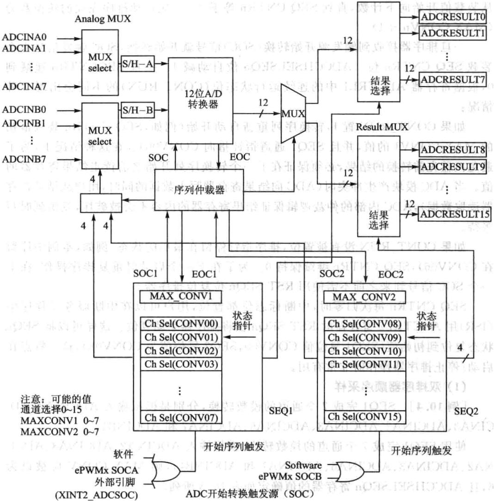
图10.11双排序器状态下的结构框图
SEQ1和SEQ2同时产SOC请求，则ADC完成SEQ1的有效排序后，将会即处理新的SEQ1的转换请求，SEQ2的转换请求处于挂起状态。
双排序式使了2个排序器，SEQ1/SEQ2能在次排序过程中对8个任意通道进排序转换。每次转换结果保存在相应的结果寄存器中，这些寄存器由低地址向高地址依次进行填充。
每个排序器中的转换通道个数依然受MAXCONVn控制，最大控制通道数为7，不是前面的16了。该值在动排序转换的开始时被载到动排序状态寄存器（AUTO_SEQ_SR）的排序计数器控制位（SEQCNTR3～0），MAXCONVn的值在
0～7内变化。当排序器安排内核从CONV00开始按顺序转换时，SEQCNTRn的值从装载值开始向下计数，直到SEQCNTRn等于0。次动排序完成的转换数为(MAX CONVn+1)。
旦排序器接收到触发源开始转换(SOC)信号就开始转换，SOC触发信号也会装载SEQCNTRn位。ADCCHSELSEQn位自动减1。一旦SEQCNTRn递减到0，根据寄存器ADCTRL1中的连续运状态位（CONTRUN)的不同会出现2种情况：
如果CONT_RUN置1，转换序列重新自动开始（例如，SEQCNTRn装最初的MAXCONV1的值，并且SEQ1通道指针指向CONV00）。在这种情况下，为了避免覆盖先前转换的结果，必须保证在下一个转换序列开始之前读结果寄存器的值。当ADC模块产生冲突时（ADC向结果寄存器写数据的同时，用户从结果寄存器读取数据)，ADC内部的仲裁逻辑保证结果寄存器的内容不会被破坏，发出延时写等待。
如果CONT_RUN没有被置位，排序指针停留在最后的状态（例如，本例中停留在CONVO6），SEQCNTRn继续保持0。为了在下一个启动时重复排序操作，在下个SOC信号到来之前不需使RSTSEQn位复位排序器。
SEQCNTRn每次归零时，中断标志位都置位，用户可以在中断服务子程序中（ISR）ADCTRL2寄存器的RSTSEQn位将排序器动复位。这样可以将SEQn状态复位到初始值（SEQ1复位值CONV00，SEQ2复位值为CONV08），这一特点在启动/停止排序器操作时非常有用。
(1)双排序器顺序采样
[例10.4]SEQ1完成7个通道的模数转换，分别是模拟输ADCINA2、AD-CINA3、ADCINA2、ADCINA3、ADCINA6、ADCINA7和ADCINB4。
使用SEQ1完成7个通道的模数转换（模拟输ADCINA2、ADCINA3、ADCI-NA2、ADCINA3、ADCINA6、ADCINA7和ADCINB4），则MAXCONV应被设为6，且ADCCHSELSEQn寄存器的值确定如表10.3所列。
| 地址 | 位15~12 | 位11~8 | 位7~4 | 位3~0 | 寄存器 |
|---|---|---|---|---|---|
| 70A3h | 3 | 2 | 3 | 2 | CHSELSEQ1 |
| 70A4h | x | 12 | 7 | 6 | CHSELSEQ2 |
| 70A5h | x | X | x | x | CHSELSEQ3 |
| 70A6h | x | x | x | x | CHSELSEQ4 |
表10.3 ADCCHSELSEQn寄存器
//配置ADC
AdcRegs.ADCTRL1. bit.SEQ_CASC=0;
//建立双排序方式
AdcRegs. ADCTRL1. bit. CONT_RUN=1;
//连续运行
AdcRegs.ADCTRL1.bit.CPS=0;
//预定标系数为1
级联排序器运，将相应通道的结果存储到结果寄存器当中：
(2)双排序器同时采样
如果一个输入来自ADCINA0～7，另一个输来自ADCINB0～7，ADC能够实现2个ADCINxx输的同时采样。此外，要求2个输必须有同样的采样保持偏移量（例如，ADCINA4和ADCINB4，但不能是ADCINA7和ADCINB6）。为了让ADC模块作在同步采样模式，必须设置ADCTRL3寄存器中的SMODE_SEL位为1。在同时采样模式下，双排序器同级联排序器相比，主要区别在于排序器控制：在双排序器中每个排序器分别控制4个转换8个通道，共构成16通道，而在级联排序器的同步采样模式下，实际上只是SEQ1作为排序器，控制8个转换16个通道。下给出了双排序器模式下同步采样设计实例。
[例10.5] 双排序器同步采样模式ADC应实例。
3.排序器的启动/停模式
排序器的启动/停止模式是相对于连续的自动排序模式而的，任何一个排序器(SEQ1、SEQ2或SEQ)都可以工作在启动/停止模式，这种方式可在不同时间上分别和多个启动触发信号同步。一旦排序器完成了第一个排序（假定排序器在中断服务子程序中未被复位），可允许排序器不需要复位到初始状态CONVOO情况下重新触发排序器。因此当个转换序列结束时，排序器就停在当前转换状态。在这种作模式下，ADCTRL1寄存器中的连续运行位（CONTRUN）必须设置为0。
[例10.6]排序器启动/停止操作模式：要求触发源1启动3个自动转换（I1，12,I3)，触发源2启动3个自动转换(V1,V2,V3)。触发源1和触发源2在时间上是独立的，(间隔 ，触发信号由ePWM提供。如图10.12所示，本例中只使用SEQ1。
在这种情况下，MAXCONV1的值设置为2，ADC模块的输人通道选择排序控制寄存器（ADCCHSELSEQn）应按表10.4设置。
| 地址 | 位15~12 | 位11~8 | 位7~4 | 位3~0 | 寄存器 |
|---|---|---|---|---|---|
| 70A3hM | V1 A | 13 | 12 | 11 | CHSELSEQ1 |
| 70A4h | x | x | V3 | $V2$ | CHSELSEQ2 |
| 70A5h | x | x | X | x | CHSELSEQ3 |
| 70A6h | x | x | X | X | CHSELSEQ4 |
表10.4ADCCHSELSEQn寄存器使用情况
一旦复位和初始化完成，SEQ1就等待触发。第一个触发到来之后，执行通道选择值为CONV00（I1）、CONV02（I2）和CONV02（I3）的3个转换。转换完成后，
SEQ1停在当前的状态等待下一个触发源，25 后另一个触发源到来，ADC模块开始选择通道为CONV03（V1）、CONV04（V2）、和CONV05（V3)的3个转换。
对于这两种触发，MAXCONV1的值会自动地装SEQCNTRn中。如果第2个触发源要求转换的个数与第1个不同，用户必须通过软件在第2个触发源到来之前改变MAXCONV1的值，否则ADC模块会重新使用原来的MAXCONV1的值。可以使用中断服务程序ISR适当地改变MAX CONV1的值。
在第2个转换序列完成之后，ADC模块的转换结果存储到相应的寄存器，如表10.5所列。
| 缓冲寄存器 | ADC转换结果缓冲 | 缓冲寄存器 | ADC转换结果缓冲 |
|---|---|---|---|
| RESULTO | I1 | RESULT4 | $\mathbf { V } 2$ |
| RESULTI | 12 | RESULT5 | $\mathrm { v } _ { 3 }$ |
| RESULT2 | 13 | RESULT6 | X |
| RESULT3 | $\mathrm { v 1 }$ | RESULT7 | X |
| 缓冲寄存器 | ADC转换结果缓冲 | 缓冲寄存器 | ADC转换结果缓冲 |
| RESULT8 | X | RESULT12 | |
| RESULT9 | X | RESULT13 | X |
| RESULT10 | X | RESULT14 | X |
| RESULT11 | X | RESULT15 |
表10.5ADC模块转换结果存储到对应的寄存器
第2个转换序列完成后，SEQ1保持在下个触发的“等待”状态。户可以通过软件复位SEQ1，将指针指到CONV00，重复同样的触发源1、2转换操作。
4.输入触发源
每个排序器都有系列可以使能或禁的触发源。SEQI、SEQ2和级联SEQ
的有效输触发如表10.6所列。
| SEQ1 | SEQ2 | 级联SEQ |
|---|---|---|
| 软件触发（r软件SOC) | 软件触发（软件SOC) | 软件触发（软件SOC） |
| EPWMxSOCA | EPWMxSOCB | EPWMxSOCAEPWMx SOCB |
| 外部SOC引脚 | 外部SOC引脚 |
表10.6排序触发信号
只要排序器处于空闲状态，SOC触发源就能启动个动转换排序。空闲状态是指：在收到触发信号前，排序器的指针指向CONVOO，或者是排序器已经完成了一个转换排序，也就是SEQCNTRn为0。如果转换序列正在运时，到来个新的SOC触发信号，则ADCTRL2寄存器中的SOC_SEQn位置1（该位在前个转换开始时已经清除）。但如果又有个SOC触发信号到来，则该信号将被丢失，也就是当SOC_SEQn位置1时（SOC挂起），随后的触发不起作用。被触发后，排序器不能在中途停或中断。程序必须等到个序列的结束或复位排序器，才能使排序器恢复到初始空闲状态（SEQ1和级联的排序器指针指向CONV00;SEQ2的指针指向CONV08)。当SEQ1/2于级联同时采样模式时，SEQ2的触发源被忽略，SEQ1的触发源有效。因此，级联模式可以看做SEQ1有16个转换通道。
5.排序器转换的中断操作
排序器有两种中断工作模式，中断模式1为每个EOS转换结束信号到来时产中断请求，中断模式2为每隔个EOS转换结束信号到来时产中断请求。这两种式由ADCTRL2寄存器中的中断模式使能控制位决定。下个例说明在不同作模式下如何使用中断模式1和中断模式2。
情形1:在第个和第2个序列中采样的数量不相等。
(1）中断模式1（每个EOS到来时产生中断请求）
①排序器用 初始化，转换 和 。
②在中断服务子程序a中，通过软件将MAXCONVn的值设置为2，转换 和
③在中断服务子程序b中，完成下列任务：
将MAXCONVn的值再次设置为1，转换 和
》从ADC结果寄存器中读出 和 的值。
V复位排序器。
④重复操作第②步和第③步。每次SEQCNTRn等于0时产生中断，且中断能够被识别。
情形2：在第一个和第二个序列中采样的数量相等。
(2）中断模式2操作（每隔一个EOS信号产生中断请求）
①排序器设置MAX 初始化，转换 或 和
②在服务子程序b和d中，完成下列任务；
从ADC结果寄存器中读出 和 的值。
》复位排序器。
》重复第②步。
(3）情形3：两个序列的采样个数是相等的（带空读）
中断模式2（隔个EOS信号产生中断请求）：
① ，初始化序列器，转换 和x（空采样）。
②在中断服务子程序b和d中，完成下列任务；
从ADC结果寄存器中读出 和 的值。
复位排序器。
》重复第②步。在①中， 后的x采样为一个空的采样，其实并没有要求采样。然而，利用模式2间隔产生中断请求的特性，可以减小中断服务子程序和CPU的开销。如图10.13所示为ADC在序列转换过程中的中断操作的时序。
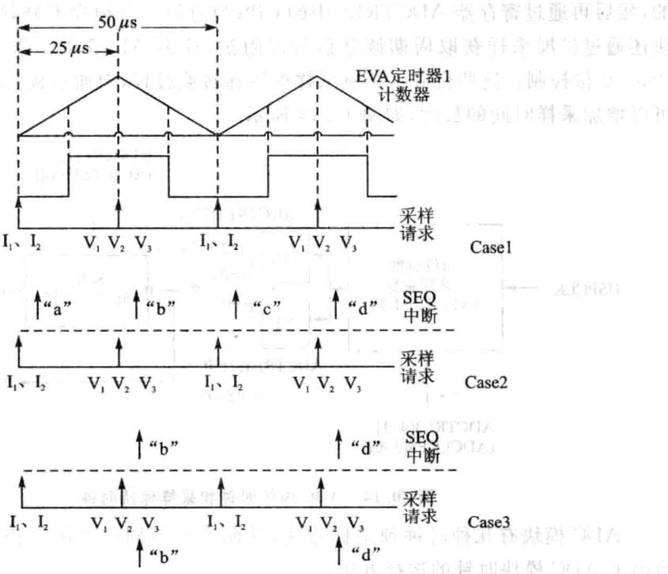
图10.13在排序转换时的中断操作时序
6.排序器覆盖功能
通常在运行模式下，排序器SEQ1、SEQ2或者级联SEQ用于选择ADC通道，并将转换的结果存储在相应的ADCRESULTn寄存器中。在MAXCONVn设置的转换结束时，排序器自动返回0。在使用排序器覆盖功能时，排序器的自动返回可通过软件控制，这由ADC控制寄存器1（ADCCTRL1）的第5位控制。例如，假定SEQ-OVRD位为0，ADC工作在级联模式下的连续转换模式，MAXCONV1设置为7，通常情况下，排序器会递增并将ADC转换结果更新结果寄存器到ADCRESULT7寄存器，然后返回到0。当ADCRESULT7寄存器更新完成后相应的中断标志位被置位。当SEQ-OVRD位被重新置位，排序器在更新7个结果寄存器后不再回绕到0，而将继续增加，并更新ADCRESULT8寄存器，直到ADCRESULT15为止。当AD-CRESULT15寄存器更新完毕，再返回到 这可以将结果寄存器看成 用于ADC对连续数据的捕捉。当ADC在最高数据速率下进行转换时，这个功能有助于捕提ADC的数据。
10.4ADC的时钟控制
🔧 交互式学习：ADC采样保持与转换时序
外设时钟HSPCLK是通过ADCTRL3寄存器的ADCCLKPS[3～0]位来分频的，然后再通过寄存器ADCTRL1中的CPS位进2分频或不分频。此外，ADC模块还通过扩展采样获取周期调整信号源阻抗，这由ADCTRL1寄存器中的ACQ_PS3～0位控制。这些位并不影响采样保持和转换过程，但通过延长转换脉冲的长度可以增加采样时间的长度，如图10.14所示。
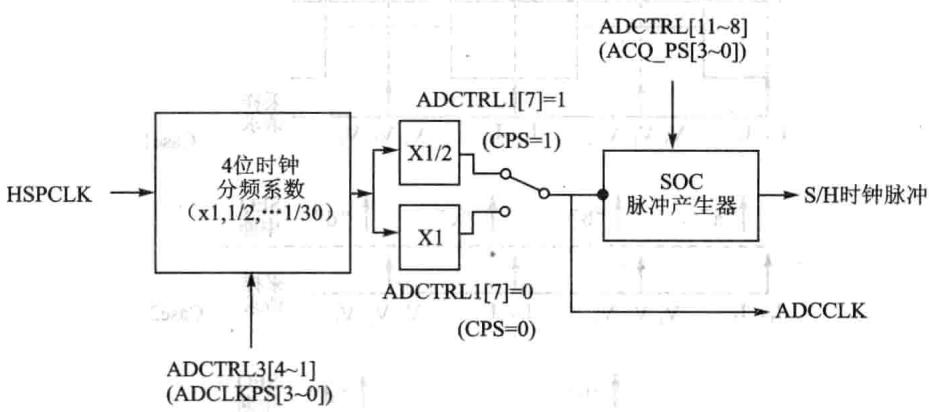
图10.14 ADC内核时钟和采样保持时钟
ADC模块有种时钟预定标法，从而产不同速度的操作时钟。图10.15给出了ADC模块时钟的选择法。
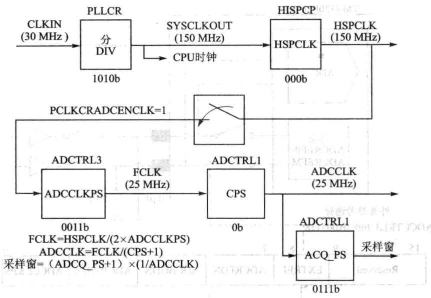
图10.15输入到ADC模块的时钟
10.5 ADC电气特性
1.参考电压选择
1 F28335处理器的模/数转换单元的参考电压有2种提供方式，即内部参考电压和外部参考电压，外部参考电压分别为2.048V、1.5V或1.024V。具体选择哪种参考电压由控制寄存器3的第8位（EXTREF)控制，一般情况下，尽量选择内部参考源。如图10.16所示，这种设计方式为模/数转换的增益校准提供了方便。为了获得良好的增益性能，处理器要求2个参考引脚ADCREFP和ADCREFM的电压差为1V。一般情况下，ADCREFP的电压为 V,ADCREFM的电压为 M
图10.17给出了外部参考电路，该电路采用精准的参考电压并通过分压保证准确的参考范围，在给处理器引脚提供之前增加缓冲电路。采用该电路主要有2个优点：
①稳定的ADCREFP和ADCREFM对于实现良好的ADC性能常重要，然ADCREFP和ADCREFM是静态的，ADC使参考则是动态的。在每次模/数转换过程中对两个参考电压引脚进采样，并且要求在特定的ADC时钟周期内能够稳定。外部参考电路刚好能够满ADC的动态和稳定性要求。
②在ADC操作过程中ADCREFP和ADCREFM的电流会有所波动，如果不采用外部缓冲电路/分压电阻上的电流会产生变化，从而改变输的参考电压值，导致增益误差变大。
图10.17给出的外部参考电路为ADCREFP和ADCREFM引脚分别提供
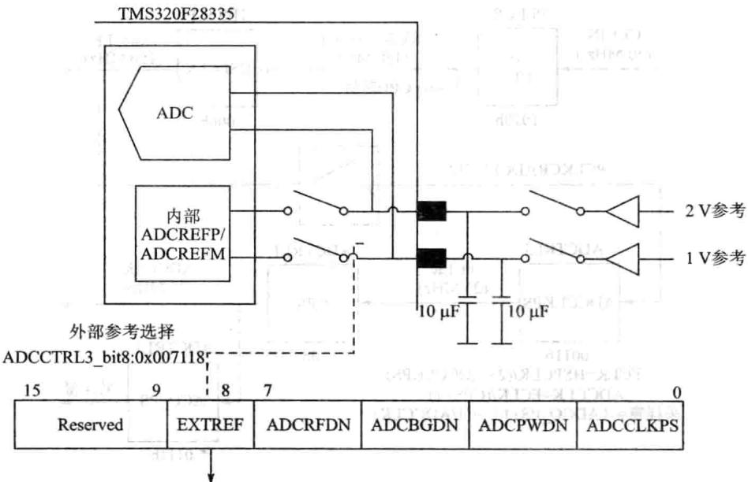
0:默认状态，ADCREFP（2V）和ADCREFM（1V）脚输出内部参考信号1:使能ADCREFP（2V）和ADCREFM（1V）引脚作为外部参考输入引脚图10.16TMS320F28335处理器ADC参考信号
2.048V和1.0489V参考电压，为减少参考信号负载对参考电压的影响增加了缓冲电路。ADCREFP和ADCREFM的参考电压差要求等于1V，外部实际电压差为0.999V，满1%的误差要求。ADC的精度除了受原理上设计的影响，选择的元器件的精度也会影响ADC的精度。此外，在PCB设计时所有元器件应尽量靠近AD-CREFP和ADCREFM引脚。
在软件设计时需要完成下列操作：
F2833x器件初始化完成后，使能ADC时钟。
设置寄存器配置ADCREFP和ADCREFM引脚为输。由于ADCREF和AD-CREFM引脚默认为输出，因此上电后要尽快配置位输入，防止ADC上电后产生冲突。自使能ADC上电。
选择外部参考信号源的ADC初始化代码如下：
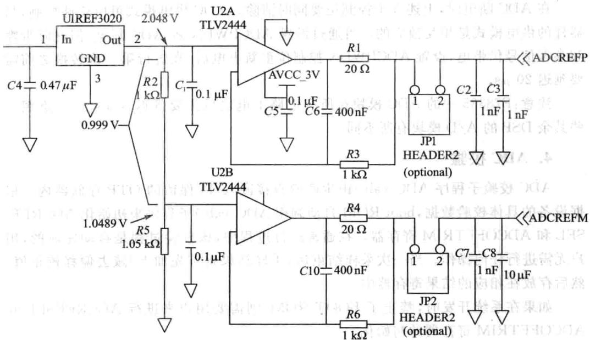
图10.17外部参考电路原理图
2.低功耗模式
ADC支持3种不同的供电模式，分别为：ADC上电、ADC断电、ADC关闭。这3种模式由ADCTRL4寄存器控制，具体控制信息如表10.7所列。当
| 供电模式 | ADCBGRFDN1 | ADCBGRFDNO | ADCPWDN |
|---|---|---|---|
| ADC上电 | 1 | 器分春元单 | 器分春元单DQ |
| ADC断电 | 1 | 1 | 0 |
| ADC关闭 | 0 | 0 | 0 |
| 保留 | |||
| 保留 |
表10.7ADC供电选择
3.上电次序
ADC复位时即进关闭状态，从关闭状态上电时ADC应遵循以下步骤：
①如果采外部参考电压时，采ADCREFSEL寄存器的15~14位使能该外部参考模式。必须在带隙上电之前使能该模式。
②通过置位ADCTRL3寄存器的7～5位(ADCBGRFDN[1:0]，ADCPWDN)能够给参考信号、带隙和模拟电路同上电。
③在第一次转换运之前，至少需要延迟5ms。
在ADC断电时，上述3个控制位要同时清除。ADC供电模式可由软件控制，与器件的供电模式是相互独的。可通过设置ADCPWDN将ADC断电，但此时带隙和参考信号仍带电，设置ADCPWDN控制位重新上电后，在进行第一次转换之前需要延迟20s。
注意：F28335中的ADC模块在所有电路上电之后需要延迟5ms，这一点跟一些其余DSP的A/D模块有所不同。
4.ADC校验
ADC校验程序ADC_cal（)由产商直接嵌TI保留的OTP存储器内。根据设备的具体校验数据，bootROM自动调用ADC_cal（)子程序来初始化ADCREF-SEL和ADCOFFTRIM寄存器。在通常运行过程中，该校验过程是自动完成的，用户需进任何操作。当次采样结束后，采样结果将首先加上/减去偏移校正值，然后存放在相应的结果寄存器中。
如果在系统开发时，禁了BOOTROM，则需要用户来进ADCREFSEL和ADCOFFTRIM寄存器的初始化。
OTP存储器是保密的，ADC_cal（)子程序必须由受保护的存储器调用，或者在编码安全模块解锁之后由非安全存储器调用。如果ADC复位后，子程序也需要被重复调用。 左
5.DMA接□
位于外设0地址单元内的ADC结果寄存器（OxOB0O~0xOBOF)持DMA直接访问模式，由于DMA访问需通过总线，所以这些寄存器同时持CPU访问。位于外设2地址单元的ADC结果寄存器（0x7108～0x710F)不持DMA访问。
10.6 ADC单元寄存器
1.ADC模块控制寄存器1(ADCTRL1)
ADC模块控制寄存器1（ADCTRL1)各位信息如表10.8所列。
| 位 | 名称 | 功能描述 |
|---|---|---|
| 15 | Reserved | 保留 |
| 14 | RESET | ADC模块软件复位0:无效1：复位整个ADC模块（复位后此位将自动清0) |
表10.8 ADC模块控制寄存器1(ADCTRL1)
续表10.8
| 位 | 名称 | 功能描述 |
|---|---|---|
| 13~12 | SUSMOD1SUSMOD2 | 仿真悬挂模式这两位决定产生仿真器挂起操作时执行的操作（如调试器遇到断点）00:仿真挂起被忽略01:当前排序完成后排序器与其他逻辑即停止工作，锁存最终结果更新状态机10:当前排序完成后排序器与其他逻辑即停工作，锁存最终结果更新状态机11：仿真器挂起，排序器与其他逻辑立即停止 |
| 11~8 | ACQ_PS[3:0] | 采样时间选择位控制SOC的脉冲宽度，同时也决定了采样开关闭合的时间。SOC的脉冲宽度是ADCTRL[11～8]十1个ADCLK周期数 |
| CPS | 转换时间预定标器对外设时钟HSPCLK分频0:f=CLK/11:f=CLK/2注：CLK=定标后的HSPCLK（ADCCLKPS[3:0]） | |
| 6 | CONT_RUN | 运行方式0：读取完转换序列后停止（启动/停止模式）1:连续运行（从起始状态开始） |
| 5 | SEQ_OVER | 排序器运行方式（连续运行模式）0:转换完MAX_CONVn个通道后，排序器指针复位到初始状态1：最后一个排序状态后，排序器指针复位到初始状态 |
| 4 | SEQ_CASC | 排序器模式0:双排序器模式1:级联排序器模式 |
| 3~0 | Reserved | 保留 |
2.ADC模块控制寄存器2（ADCTRL2）
ADC模块控制寄存器2（ADCTRL2)各位信息如表10.9所列。
| 位 | 名称 | 功能描述 |
|---|---|---|
| 15 | ePWM_SOCB_SEQ | 级联排序器使能ePWMSOCB，1有效0:无效1:允许ePWMSOCB触发 |
表10.9 ADC模块控制寄存器2(ADCTRL2)
续表10.9
| 位 | 名称 | 功能描述 |
|---|---|---|
| 14 | RST_SEQ1 | 复位排序器向该位写1立即复位SEQ1为预触发状态，退出正在执的转换序列0:无效1:复位排序器SEQ1到CONV00状态 |
| 13 | SOC_SEQ1 | SEQI的启动转换触发以下触发可引起该位的置位：S/W——软件向该位写1ePWM_SOCAePWM触发》ePWM_SOCBePWM触发（仅在级联模式中）EXT—外部引脚（如ADCSOC)当触发源到来时，有3种情况①SEQ1空闲且SOC位清0。SEQ1即开始，允许任何触发“挂起”的请求②SEQ1忙且SOC位清0。此时表示可以挂起个触发请求。当完成当前的转换SEQ1重新开始时，该位清0③SEQ1忙且SOC位置位。这种情况下任何触发将会忽视（丢失） |
| 12 | Reserved | 保留 |
| 11 | INT_ENA_SEQ1 | SEQ1中断使能使能INTSEQ1向CPU发出中断申请0:禁止INTSEQ1向CPU发出中断申请1:允许INTSEQ1向CPU发出中断申请 |
| INT_MOD_SEQ1 | SEQ1中断模式选择INTSEQ1中断模式0:每个SEQ1序列结束时，INTSEQ1置位1:每隔一个SEQ1序列结束时，INTSEQ1置位 | |
| 10 | ||
| 9 | Reserved | 保留 |
| 8 | ePWM_SOCA_SEQ1 | SEQ1的ePWM的SOCA屏蔽位0:ePWM的触发信号不能启动SEQ11:允许ePWM的触发信号启动SEQ1 |
| 7 | EXT_SOC_SEQ1 | SEQ1的外部信号启动位0:无操作 |
| 1：外部ADCSOC引脚信号启动ADC自动转换序列 | ||
| 6 | RST_SEQ2 | 复位SEQ20:无操作1:立即复位SEQ2为预触发状态，退出正在执的转换序列 |
0:015:
续表10.9
| 位 | 名称 | 功能描述 |
|---|---|---|
| 5 | SOC_SEQ2 | 序列2(SEQ2）的转换触发启动仅适用于双排序模式，在级联模式下不使用，下列触发可使该位置位：S/W——软件向该位写1ePWM_SOCB- ePWM触发当触发源到来时，有3种情况①SEQ2空闲且SOC位清0。SEQ1立即开始，允许任何触发“挂起”的请求②SEQ2忙且SOC位清0。此时表示可以挂起一个触发请求。当完成当前的转换SEQ1重新开始时，该位清0③SEQ2忙且SOC位置位。这种情况下任何触发将会忽视（丢失） |
| 4 | Reserved | 保留 |
| 3 | INT_ENA_SEQ2 | SEQ2中断使能使能INTSEQ2向CPU发出中断申请0:禁止INTSEQ2向CPU发出中断申请1:允许INTSEQ2向CPU发出中断申请 |
| 2 | INT_MOD_SEQ2 | SEQ2中断模式选择INTSEQ2中断模式0:每个SEQ2序列结束时，INTSEQ2置位1:每隔个SEQ2序列结束时，INTSEQ2置位 |
| 1 | Reserved | 保留 |
| 0 | ePWM_SOCB_SEQ2 | SEQ2的ePWM的SOCB屏蔽位0:ePWM的触发信号不能启动SEQ21:允许ePWM的触发信号启动SEQ2 |
3.ADC模块控制寄存器3(ADCTRL3)
ADC模块控制寄存器3(ADCTRL3)各位信息如表10.10所列。
| 位 | 名称 | 功能描述 |
|---|---|---|
| 15~8 | Reserved | 保留 |
| 7~6 | ADCBGRFDN[1:0] | ADC带隙和参考的电源控制直公人该位控制内部模拟的内部带隙和参考电路的电源00:带隙与参考电路掉电11:带隙与参考电路上电 |
表10.10 ADC模块控制寄存器3(ADCTRL3）
续表10.10
| 位 | 名称闻 | 功能描述 |
|---|---|---|
| 5 | ADCPWDN | ADC电源控制该位控制除带隙和参考电路外的ADC其他模拟电路的供电0：除带隙与参考电路外的ADC其他模拟电路掉电1:除带隙与参考电路外的ADC其他模拟电路上电 |
| 先4~1 | ADCCLKPS[3:0] | ADC的内核时钟分频器对F28x外设时钟HSPCLK进行2×ADCLKPS[3:0]的分频，分频后的时钟再进行ADCTRL1[7+1分频从而产生ADC的内核时钟ADCCLKADCCLKPS[3:0]时钟分频 ADCLK0000 0 HSPCLK/（ADCTRL1[7]+1)0001 1 HSPCLK/（2×ADCTRL1[7]+1)0010 治国2 HSPCLK/（4×ADCTRL1[7]+1)0011 3 HSPCLK/(6×ADCTRL1[7]+1)0100 4 HSPCLK/(8×ADCTRL1[7]+1)0101 5 HSPCLK/（10×ADCTRL1[7]+1)0110 6 HSPCLK/（12×ADCTRL1[7]+1)0111 HSPCLK/(14×ADCTRL1[7]+1)1000 8 HSPCLK/(16×ADCTRL1[7]+1)1001 9 HSPCLK/(18×ADCTRL1[7]+1)1010 10 HSPCLK/(20×ADCTRL1[7]+1)1011 11 HSPCLK/(22×ADCTRL1[7]+1)1100 12 HSPCLK/(24×ADCTRL1[7]+1)1101 13 HSPCLK/(26×ADCTRL1[7]+1)1110 14 HSPCLK/(28×ADCTRL1[7]+1)1111 15 HSPCLK/(30×ADCTRL1[7]+1) |
| 0 | SMODE_SEL) | 采样模式选择1O0A)8器管J0A.E选择顺序采样或者同步采样A器管话登类10:顺序采样 0011:同步采样 |
| 位 | 名称 | 功能描述 |
|---|---|---|
| 15~7 | 保留 | 保留 |
| 6~0 | MAXCONVn | MAXCONVn定义了自动转换中最多转换的通道数，该位根据排序器 的工作模式变化而变化 对于SEQ1，使用MAXCONV1[2:0] 对于SEQ2，使用MAXCONV2[2:0] 对于SEQ，使用MAXCONV1[3:0] 自动转换序列总是从初状态开始，依次连续的转换直到结束，并将转换 结果按顺序装载到结果寄存器。每个转换序列可以转换1～MAX- CONVn+1个通道，转换的通道数可以编程 |
表10.11最大转换通道数（ADCMAXCONV）
5.自动排序状态寄存器ADCASEQSR
自动排序状态寄存器ADCASEQSR各位信息如表10.12所列。
| 位 | 名称 | 功能描述 |
|---|---|---|
| 15~12 | 保留 | 保留 |
| 11~8 | SEQ_CNTR | 排序器计数器状态位SEQ1、SEQ2和级联排序器使用SEQCNTRn4位技术状态位，在级联同时采样模式中与SEQ2无关。转换开始时，排序器的计数器的计数位SEQCNTR（3～O）初始为序列MAXCONV中的值。每次自动序列转换完成后，排序器计数减1。在递减计数过程中随时可以读取SEQCNTRn位检查序列器的状态。读取的值与SEQ1和SEQ2的忙位一起标志了正在执行的排序器的状态。SEQ CNTRn 转换的通道数SEQCNTRn 转换的通道数0000 1或0 1000 90001 2 1001 10 |
| 转换的通道数910 | ||
| 0010 3 10100011 4 10110100 5 11000101 6 11010110 7 11100111 8 1111 | 11121314 | |
| 1516 | ||
| 7 | 保留 | |
| 6~0 | SEQ_STATE | SEQ2PTR2～0和SEQ1PTR3～0位分别是SEQ2和SEQ1的指针。这些位保留给TI芯片测试使用 |
表10.12自动排序状态寄存器ADCASEQSR
6.ADC状态和标志寄存器
ADC状态和标志寄存器各位信息如表10.13所列。
| 位 | 名称 | 功能描述 |
|---|---|---|
| 15~8 | 保留 | 保留 |
| 7 | EOS_BUF2 | SEQ2的排序缓冲结束位在中断模式0下，该位不用或保持0，例如在ADCTRL2[2]=0时；在中断模式1下，例如在ADCTRL2[2]=1时，在每一个SEQ2排序的结束时触发。该位在芯片复位时被清除，不受排序器复位或清除相应中断标志的影响 |
| 6 | EOS_BUF1 | SEQ1的排序缓冲结束位春系发特临自在中断模式0下，该位不用或保持0，例如在ADCTRL2[10]=0时；在中断模式1下，例如在ADCTRL2[10]=1时，在每一个SEQ2排序的结束时触发。该位在芯片复位时被清除，不受排序器复位或清除相应中断标志的影响 |
| 5 | NT_SEQ1_CLR | 中断清除位读该位返回0，向该位写1可以清除中断标志0：向该位写0无影响1：清除SEQ2的中断标志位一INT_SEQ2 |
| 4 | NI_SEQ1_CLR | 中断清除位读该位返回0，向该位写1可以清除中断标志0：向该位写0无影响1：清除SEQ1的中断标志位-INT_SEQ1 |
| 3 | SEQ2_BSY | SEQ2忙状态位0:SEQ2处于空闲状态，等待触发1:SEQ2正在运行 |
| 2 | SEQ1_BSY | SEQ1忙状态位0:SEQ1处于空闲状态，等待触发1:SEQ1正在运行 |
| INT_SEQ2 | SEQ2中断标志位向该位的写无影响。在中断模式0，例如，在ADCTRL2[2]=0中，该位在每个SEQ2排序结束时被置位；在中断模式1下，在ADCTRL2[2]=1，如果EOS_BUF2被置位，该位在一个SEQ2排序结束时置位。0:没有SEQ2中断事件1：已产生SEQ2中断事件 |
表10.13-ADC状态和标志寄存器
续表10.13
| 位 | 名称 | 功能描述 |
|---|---|---|
| 0 | INT_SEQ1 | 向该位的写无影响。在中断模式O，例如，在ADCTRL2[2]=0中， 该位在每个SEQ1排序结束时被置位；在中断模式1下，在ADCTRL2 [2]=1，如果EOS_BUF1被置位，该位在一个SEQ1排序结束时置位。 0:没有SEQ1中断事件 1:已产生SEQ1中断事件 |
7.ADC输入通道选择排序控制寄存器
ADC输通道选择排序控制寄存器各位信息如表10.14所列。1
| ADCCHSELSEQ1 |
|---|
| 15~12 |
| CONV03 |
| ADCCHSELSEQ2 |
| 15~12 重 |
| CONV07 |
| ADCCHSELSEQ3 |
| 15~12 |
| CONV11 |
| ADCCHSELSEQ4 |
| 15~12 |
| CONV15 |
表10.14ADC输入通道选择排序控制寄存器
每4位CONVxx可以为一次自动排序转换选定16个ADC输通道中的一个通道，如表10.15所列。
| CONVxx | ADC输入通道选择 | CONVxx | ADC输入通道选择 |
|---|---|---|---|
| 0000 | ADCINAO | 1000 | ADCINB0 |
| 0001 | ADCINA1 | 1001 | ADCINB1 |
| 0010 | ADCINA2 | 1010 | ADCINB2 |
| 0011 | ADCINA3 | 1011 | ADCINB3 |
| 0100 | ADCINA4 | 1100 | ADCINB4 |
| 0101 | ADCINA5 | 1101 | ADCINB5 |
| 0110 | ADCINA6 | 1110 | ADCINB6 |
| 0111 | ADCINA7 | 1111 | ADCINB7 |
表10.15CONV位的值与被选择的A/D输入通道的对应表
8.结果寄存器ADCRESULTn
结果寄存器ADCRESULTn各位信息如表10.16所列。
| 15 | 14 | 13 | 12 | 11 | 10 | 9 | 6 | 5 | 4 | 3 | 2 | 1 | 0 | ||
|---|---|---|---|---|---|---|---|---|---|---|---|---|---|---|---|
| D11 | D10 | D9 | D8 | D7 | D6 | D5出 | D4 | D3 | D2 | D1 | D0 | X | X |
表10.16结果寄存器ADCRESULTn
F28335内部A/D只有12位，用16位的结果寄存器来存储，所以必定有4位是保留位，当结果寄存器映射在外设帧2中需经2个等待状态，并采用左对齐，若映射在外设帧0中，不需等待，采用的是右对齐，表10.15为左对齐形式。(/
模拟输入电压0～3V，因此有如下结果对应如表10.17所列。
| 模拟电压/V | 转换结果 | 结果寄存器 | 模拟电压/V | 转换结果 | 结果寄存器 |
|---|---|---|---|---|---|
| 3.0 | FFFh | 1111111111110000 | 0.00073 | 1h | |
| 1.5 | 7FFh | 01111111 1111 0000 | 0 | J0h |
表10.17A/D转换结果对应表
10.7手把手教你实现内A/D数据采集
1.实验目的
掌握F28335片内A/D的使用。
2.实验主要步骤
①先用短接帽将YX-F28335开发板的JP1的1、2脚短接，再用短接线将J5的26脚与J3的1脚连接起来，如图10.18所示（此步骤一定要正确，如果接人A/D的电压超过3V，将会导致DSP烧毁）。
②打开已经配置好的CCS3.3软件。
③将仿真器的USB与计算机连接，将仿真器的另一端JTAG端插到YX-F28335开发板的JTAG针处。
④在CCS中选择Debug→Connect菜单项，连接目标板，确定目标板连接成功。
⑤将AD目录复制到CCS开发环境中的My project目录下。
⑥在CCS莱单中选择project→Open菜单项，加载AD目录中的AD.pjt。
⑦在CCS菜单中选择File→Load Program菜单项，加载Debug目录中的AD.out。
⑧在CCS菜单中选择Debug→Run,在CCS菜单中选择View→Graph→time/frequency进行如图10.19所示设置：
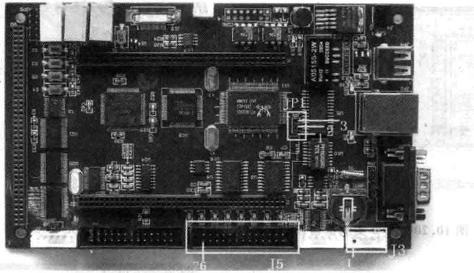
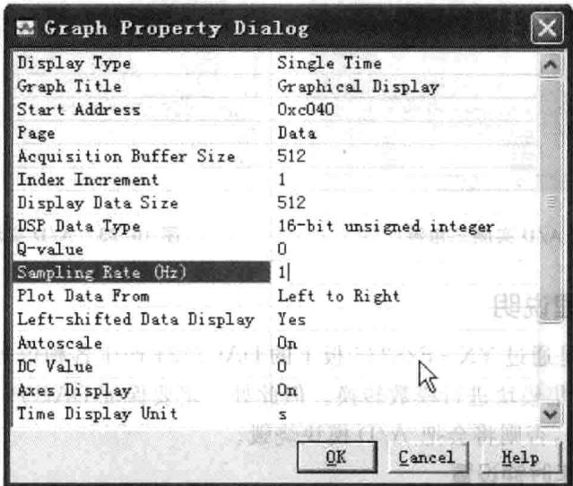
图10.18A/D测试短接管脚示意图10.19图形查看设置
单击OK按钮，即可观察如图10.20所示的波形：
⑨将短接线将J5的26脚与J3的2脚连接起来，按照相同的法观看的波形 如图10.21所示。
将短接线将J5的26脚与J3的3脚连接起来，按照相同的法观看的波形如 图10.22所示。
①将短接线将J5的26脚与J3的4脚连接起来，按照相同的法观看的波形如 图10.23所示。
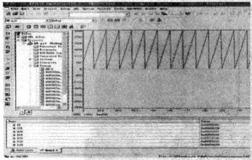
图10.20A/D实测锯齿波
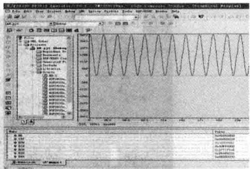
图10.21A/D实测正弦波
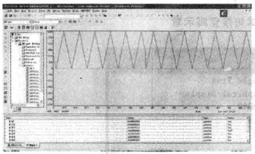
图10.22A/D实测三角波
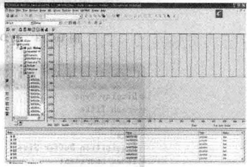
图10.23 A/D实测矩形波
3.实验原理说明
此实验主要是通过YX-F28335板上的DAC7724产生各种信号源，然后将这些信号送A/D采集模块进模数转换。但此处定要保证DAC产的信号电压范围在0~3V之间，否则将会把A/D模块烧毁。
(1)ADC工作时钟设置
(2) ADC初始化设置
//给ADC内部上电//在ADC转换前要延时一段时间
(3)ADC工作方式设置
接下来就是D/A产生信号，A/D采样信号，在此需要注意的是一定要控制D/A输出信号的电压范围（O~3V)
(4)DAC信号产生以及A/D采样信号程序：
4.实验观察与思考
①如果按照A/D为12位来计算，请问模拟2.5V转换后的数字值为多少？
②如何通过实验得出A/D的实际精度?